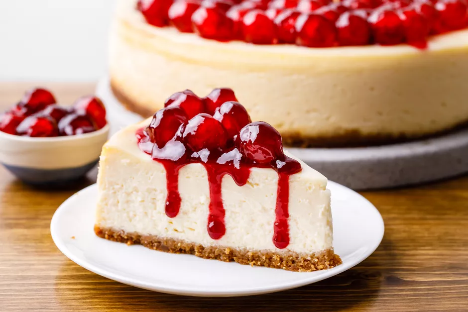

New York Cheesecake

Description
A delicious new york staple. The New York Cheesecake
This is a great after dinner meal for most nights, can't go wrong
Ingredients
- 15 Graham crackers, crushed
- 2 tablespoons butter, melted
- 4 (8ounce) packages cream cheese
- 1.5 cups white sugar
- 3/4th cup milk
- 4 eggs
- 1 cup sour cream
- 1 tablespoon vanilla extract
- 1/4th cup all-purpose flower
Steps
- Preheat oven to 350 degrees F (175 degrees C). Grease a 9 inch springform pan
- In a medium bowl, mix graham cracker crumbs with melted butter. Press onto bottom of springform pan
- In a large bowl, mix cream cheese with sugar until smooth. Blend in milk, and then mix in the eggs
one at a time, mixing just enough to incorporate. Mix in sour cream, vanilla, and flour until smooth
- Bake in a preheated oven for 1 hour. Turn the oven off, and let cake cool in oven with door closed for
5-6 hours. This prevents cracking. Chill in refrigerator until serving.
Return to Homepage